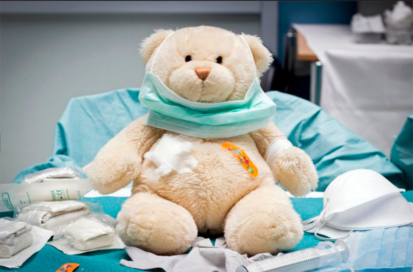

Что такое паллиатив?

Паллиативная помощь детям – это качество жизни неизлечимо больного ребенка и его семьи. Если ребенка нельзя вылечить, это не значит, что ему нельзя помочь.
Что такое паллиативная помощь детям?
Понятие паллиативная помощь детям относительно недавно вошло в медицинскую терминологию. В отличие от подходов традиционной медицины, направленных на излечение пациента, философия паллиативной помощи - поддержание максимально высокого качества жизни неизлечимо больного ребенка и его семьи. Это достигается за счет оказания медицинской, психологической, социальной и духовной помощи.
Согласно определению ВОЗ: «паллиативная помощь детям обеспечивает активный и полный уход за телом, разумом и состоянием духа ребенка с ограничивающим жизнь или угрожающим жизни заболеванием, а также оказывает поддержку семье».
Выделяют также понятие хосписная помощь или «помощь в конце жизни» – это один из видов паллиативной помощи, которая оказывается пациенту и его семье в последние месяцы жизни и в фазу горевания.
Основные отличия паллиативной помощи детям от паллиативной помощи взрослым
Паллиативная помощь детям является самостоятельной областью медицины. Несмотря на общие принципы, существуют значительные отличия в организации оказания паллиативной помощи детям и взрослым.
В первую очередь, это связано со структурой заболеваний, требующих паллиативной помощи. У взрослых – это, в основном, онкологические заболевания, которые составляют 80-90%. У детей – онкология составляет только 10-20%, а основная пропорция представлена неонкологическими заболеваниями: болезни нервной системы, метаболические и нейродегенеративные заболевания, редкие хромосомные и генетические синдромы, ВИЧ/СПИД – всего около 780 заболеваний;
Во-вторых, это продолжительность наблюдения. У детей трудно предсказать течение заболевания, они могут находиться под паллиативным наблюдением длительно, годами, тогда как паллиативная помощь взрослым в большинстве случаев оказывается ограниченное время, как «помощь в конце жизни»;
При оказании паллиативной помощи детям необходимо учитывать, что ребенок находится в постоянном развитии (физическом и психическом), что требует непрерывной модификации и адаптации подходов к потребностям ребенка и семьи;
Четвёртым важным отличием является назначение лекарственных препаратов, поскольку фармакокинетика и фармакодинамика лекарственных средств у детей отличается от взрослых, недостаточно подходящих форм применения и дозировок для использования у детей, особенно маленьких и новорожденных.
И, наконец, очень важны психологические аспекты. Роль семьи для ребенка гораздо важнее, чем для взрослого, возникает много специфических вопросов, связанных с общением с ребенком, его родителями. Также, надо учитывать отношение к утрате ребенка в современном обществе. В развитых странах детская смертность низкая, поэтому сообщества и медработники не всегда подготовлены к оказанию профессиональной помощи семье, потерявшей ребенка.
Основы оказания паллиативной помощи детям
При оказании паллиативной помощи детям учитываются следующие базовые принципы:
-
паллиативная медицина, которая направлена на контроль симптомов заболевания, в первую очередь боли и других;
-
паллиативный уход - это комплекс мероприятий по уходу за тяжелобольным ребенком;
-
и паллиативный подход.
В паллиативной помощи важны не только медицинские знания и не только навыки правильного ухода, но также паллиативный подход, который подразумевает отношение к жизни и смерти, как единому процессу, уважение к тем людям, которых мы не можем вылечить. Паллиативный подход объединяет паллиативную медицину и паллиативный уход, и только в результате этого можно оказывать качественную паллиативной помощи детям.
Мультидисциплинарная команда специалистов
Для оказания эффективной паллиативной помощи требуется широкий мультидисциплинарный подход, охватывающий семью и использующий имеющиеся в конкретном сообществе ресурсы. В команду специалистов по паллиативной помощи детям входят: врачи, медсестры, психологи, социальные работники и волонтеры.
Приоритетом является оказание паллиативной помощи на дому
Паллиативную помощь можно оказывать в специализированных учреждениях, в медицинских учреждениях общего профиля и на дому. Однако приоритетом является оказание паллиативной помощи на дому, поскольку ребенок должен находиться в естественном окружении родных и друзей, что способствует его развитию и повышает качество жизни.
При этом нет разобщения членов семьи и родителей между собой. Надо отметить, что предпочтение находиться дома высказывают до 80% опрошенных семей.
Немаловажно, что освобождаются койки в стационаре и реанимации для детей с острой патологией, происходит более экономное расходование средств бюджета.
Паллиативная помощь на дому направлена на всю семью и включает, помимо медицинской помощи, проведение культурных мероприятий, летнего отдыха для больных детей и их братьев и сестер, которые организовывают социальные работники и волонтеры.
Условия оказания эффективной паллиативной помощи на дому
Для организации эффективной паллиативной помощи на дому важны следующие условия:
-
В первую очередь – это любовь семьи и желание родителей обучаться уходу за больным ребенком.
Очень важно при этом, чтобы у медицинских работников установились доверительные отношения с членами семьи.
Медсестра паллиативной помощи детям обучает родителей или опекунов паллиативному уходу, как проводить аспирацию мокроты, кормить ребенка с помощью зонда, обрабатывать трахеостому или гастростому и другим манипуляциям. Во время каждого визита врач или медсестра следят за правильностью выполнения манипуляций, регулярный мониторинг состояния ребенка проводится по телефону.
-
Во-вторых, необходимо обеспечить семью оборудованием и расходными материалами
Паллиативная помощь детям – это высокотехнологическая область медицины. Современное оборудование позволяет оказывать помощь на дому детям, которые раньше зависели от медицинской аппаратуры больниц, годами могли находиться в отделении реанимации. Сейчас в наличие есть портативные аппараты искусственной вентиляции легких, которые позволяют жить в семье детям с сохранным интеллектом, которые не могут самостоятельно дышать. Существуют разные виды электроотсосов для аспирации мокроты в домашних условиях, в том числе портативные, которые могут работать до 7 часов без постоянного источника электроэнергии. Мы также используем концентраторы кислорода, пульсоксиметры, кашляторы, разные виды расходных материалов: гастростомы, трахеостомы, зонды нескольких размеров для детей разного возраста и массы тела.
-
Третьим условием является высококвалифицированная команда специалистов, которая может оказывать паллиативную помощь при необходимости 24 часа в сутки.
Для каждого ребенка, который нуждается в паллиативном наблюдении, составляется индивидуальный план, учитывающий потребности ребенка и семьи, согласно которому осуществляется посещение всеми членами команды ребенка на дому. Для детей, которые живут за пределами городов, создана выездная форма работы. Для осуществления круглосуточного оказания помощи используется система дежурств.
-
В-четвертых, для качественной паллиативной помощи детям на дому важна поддержка волонтеров, спонсоров, общественных организаций.
Незаменимыми помощниками паллиативной команды являются волонтеры, которые помогают решать многие организационные и социальные вопросы помощи семье. Работа сотрудников фандрейзинга направлена на привлечение спонсоров для финансирования оказания качественной паллиативной помощи детям.
Повысить эффективность паллиативной помощи помогает сотрудничество с общественными и международными организациями, которые оказывают помощь наиболее уязвимым категориям детей.

Контакты


НАШЕ МЕСТОРАСПОЛОЖЕНИЕ:
223053, Минский район, Боровлянский с/с, 71
район пос. Опытный ул. Лесная
E-MAIL: hospice.belarus@gmail.com
ТЕЛЕФОНЫ:
Директор +375 17 503 57 15
Приёмная +375 17 503 57 24
Мобильный +375 29 777 76 02
Координатор автоволонтеров +37525 602 78 73